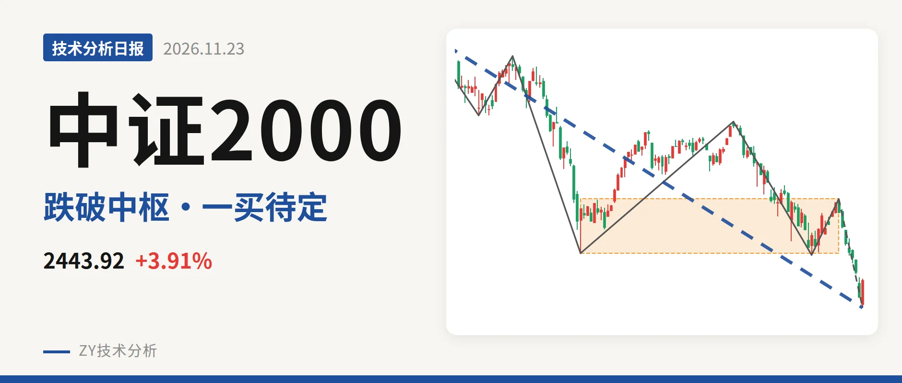
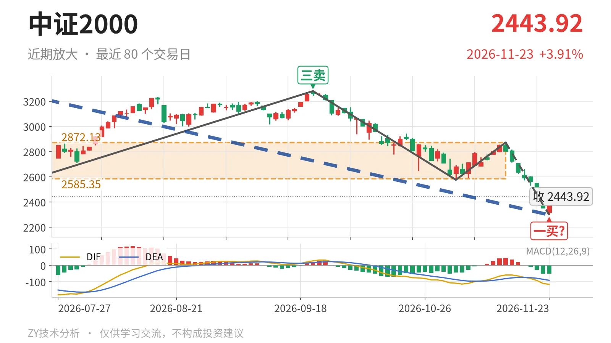

中证2000｜失守2585点中枢，暂定一买2297

最近日线中枢 2585.35—2872.13点，收盘位于中枢之下
一句话：日线下跌段未见背驰，收盘低于2585点中枢下沿，结构偏弱。
🧭 走势结构：5月14日以来的日线下跌段还在延续
当前仍处在5月14日以来的日线下跌段里，结构没有结束。更大级别上，5月14日以来的下跌走势从3768.08点落到2297.27点，跌39.0%，同样还在向下运行。日线线段上，2024年2月6日至2025年9月18日的上涨线段已经结束，2025年9月18日至2025年11月21日的回落也早就结束；5月14日至11月23日的下跌线段已经包含7笔，内部没有出现反向线段破坏。因此这里不是日线级别的中枢震荡，而是继续下行段。

📍 中枢与位置：收盘跌破最近中枢下沿，中枢下移
最新收盘2443.92点已跌破最近日线中枢下沿。该中枢为7月21日至11月12日中枢，区间 2585.35—2872.13点，中轴2728.74点，2443.92点低于下沿约5.5%，不在中枢内。再往前看，2024年11月12日至2025年6月23日中枢在2293.12—2547.90点，中轴2420.51点；当前点位已经跌入这个前中枢区间，但仍在下沿2293.12点上方。最近中枢从2728.74点下移到2420.51点附近，说明结构处于下移后的离开段，不是中枢内震荡。
🎯 买卖点：11月23日暂定一买，二三买已降级
日线笔级别上，11月23日的2297.27点只能算 暂定的一买。此前卖点结构清楚：5月14日一卖3768.08点、6月23日二卖3626.48点、9月22日三卖3280.29点，卖点一个比一个低。价格在9月22日三卖后继续刷新到2297.27点，说明这段下跌没有被同级别反向笔破坏。线段级别上，2025年11月21日的二三买2944.56点已被后续新低跌破，只能对应更小级别反抽；11月23日类二买2297.27点落在5月14日以来的下跌线段里，同样暂定。11月23日暂定一买所在的是11月12日至11月23日下跌笔，该笔还在延续，低点仍可能变化。

⚡ 背驰：当前下跌笔新低，DIF也新低，没有背驰
截至11月23日，当前下跌笔 没有背驰。与9月22日至11月2日的下跌笔比较，后者从3280.29点跌至2576.02点，绿柱面积873，DIF低点-108.5；11月12日以来的下跌笔则从2872.13点跌至2297.27点，DIF低点为-115.7。价格新低的同时DIF低点继续下移，不符合“新低不新弱”。当前绿柱面积只有137，但这一笔只走了8根K线，还没结束，面积不是最终读数。因此暂定一买目前没有背驰支持。
🧿 关键位置观察：反抽看2585点，下看2293点一线
后续强弱先看 2585点一线。最新价已经离开最近中枢下沿2585.35点，反抽若回不到2585点上方，结构上构成日线笔级别三卖；重新站上2585点，则更可能是中枢扩展。下方2293.12点是2024年11月12日至2025年6月23日中枢下沿，也是11月23日暂定类二买附近；若 2293点一线 失守且反抽不回，5月14日以来的日线下跌线段还有继续向下延伸的空间。综合看，跌破2585点、当前下跌笔又无背驰，结构偏弱。
⚠️ 本文为基于公开行情数据的缠论技术结构记录，由程序自动计算并生成，仅供学习交流，不构成任何投资建议。市场有风险，投资需谨慎。